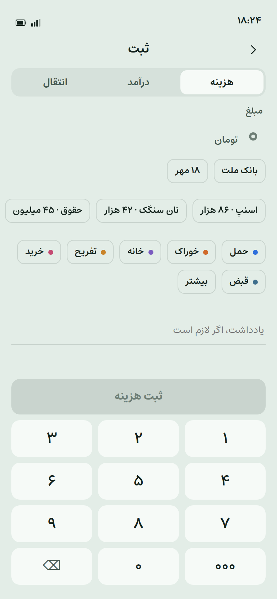
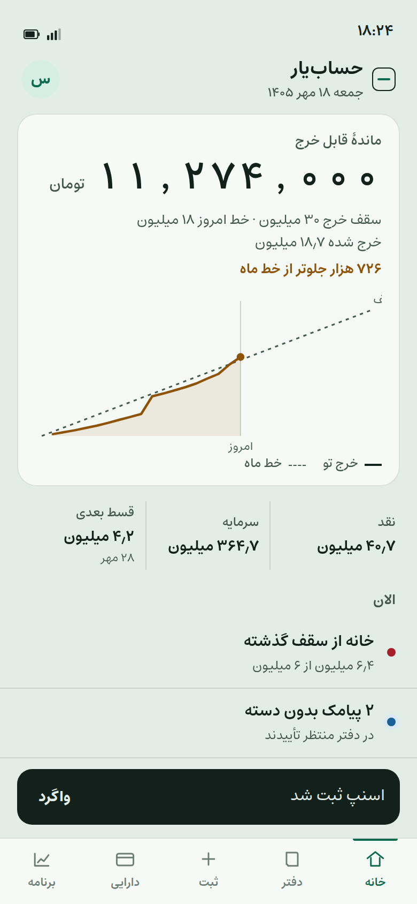
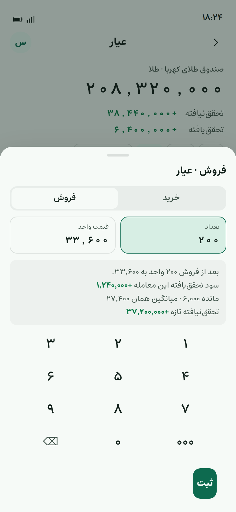
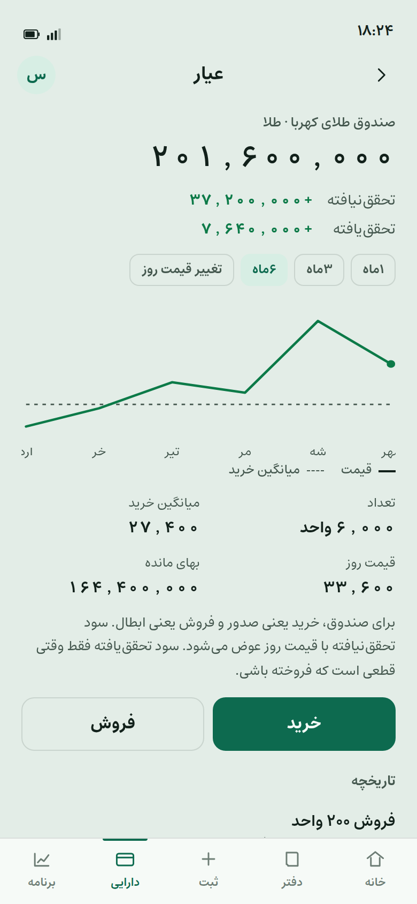

ثبت هزینه

۱ · خانه

۲ · مبلغ

۳ · الگو و دسته

۴ · ثبت و واگرد
حسابیار · سنج
ثبت از الگو در چند ضربه، با واگرد. فروش دارایی قبل از تأیید میگوید سود تحققیافتهٔ همین معامله چقدر است.
۱ · خانه

۲ · مبلغ
۳ · الگو و دسته

۴ · ثبت و واگرد

۱ · فهرست

۲ · کهربا

۳ · پیشنمایش فروش

۴ · بعد از ثبت